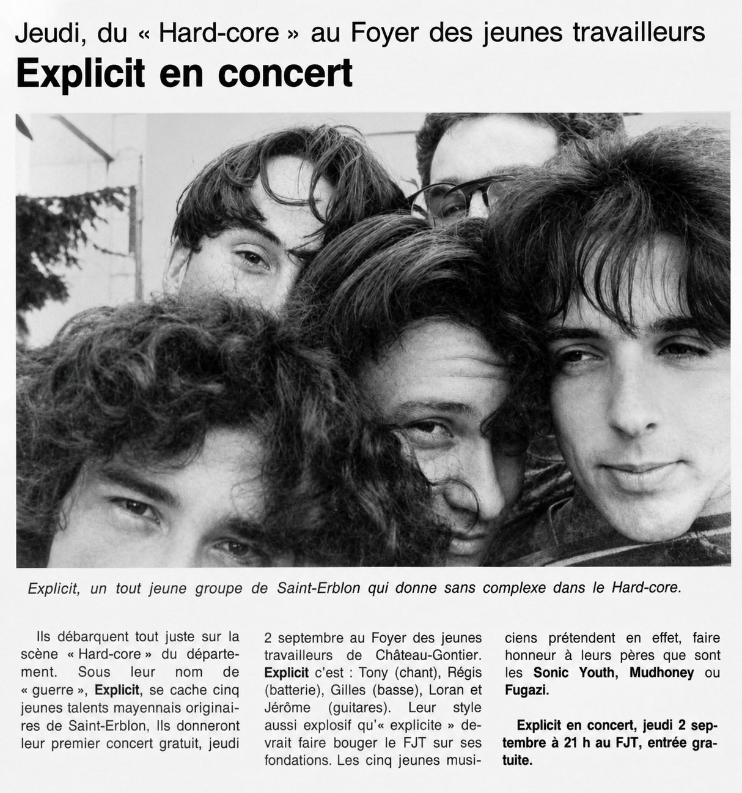

THE CONCERTS
1993-2004: twenty-seven dates found again in the archives.
TWELVE YEARS ON STAGE
From fêtes de la musique to festivals, in Mayenne, in Anjou and all the way to Brittany.

Jean-François leaves, Alex arrives on vocals and guitar: the band becomes Wöw, with Régis, Jean-Marie and Florent. The goal is to take a more professional direction, and the concerts continue in the region until the band disappears, in 2012. No date of this period is listed here yet.
THE TOWNS CROSSED
Seventeen towns, three départements, and a lot of country roads.
DATES ARE MISSING
A poster, a ticket, a live photo, a local paper?
This list stops at what the archives kept. If you remember a concert that is not in it — a fête de la musique, an evening in a bar, a festival, a date of the Wöw period (2004-2012) — or if you have a poster of the time, send it: it will join the list.
SUGGEST A DATE